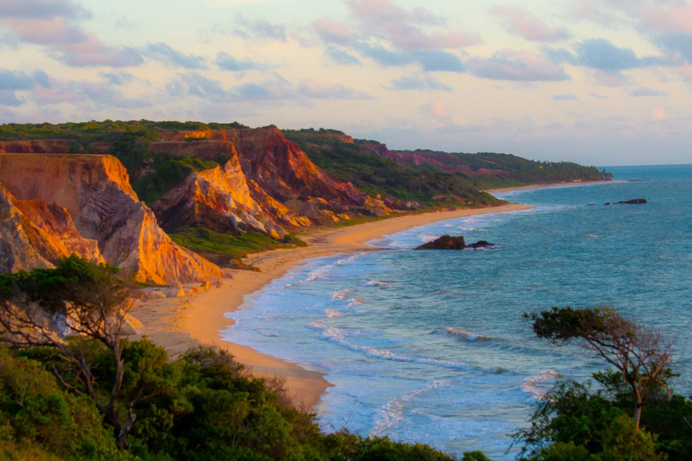
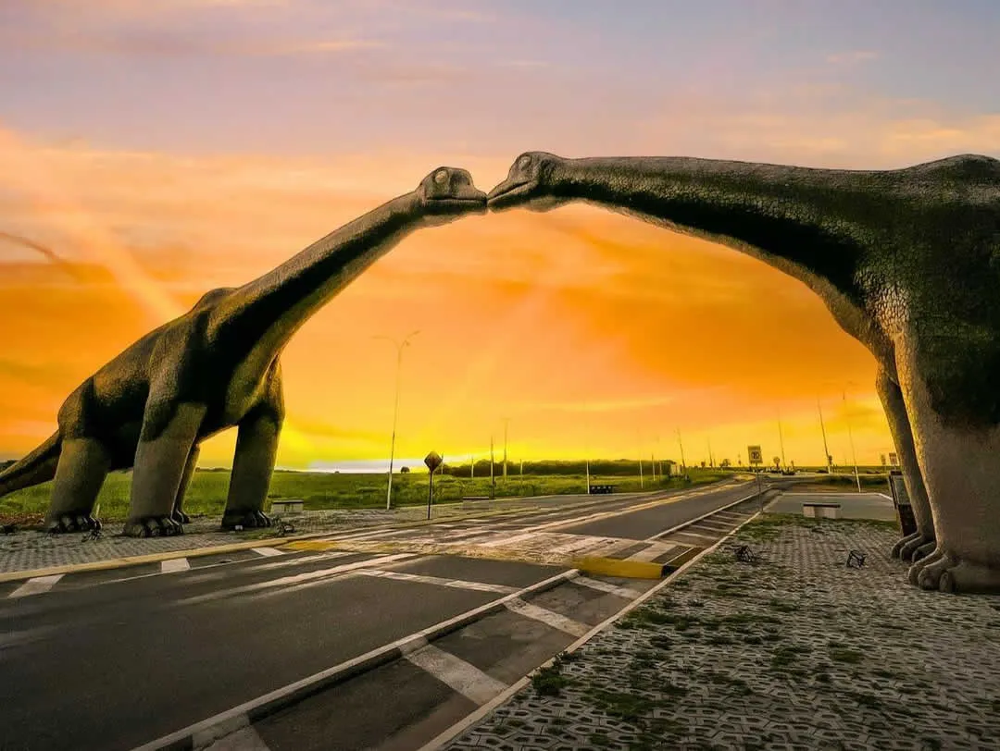
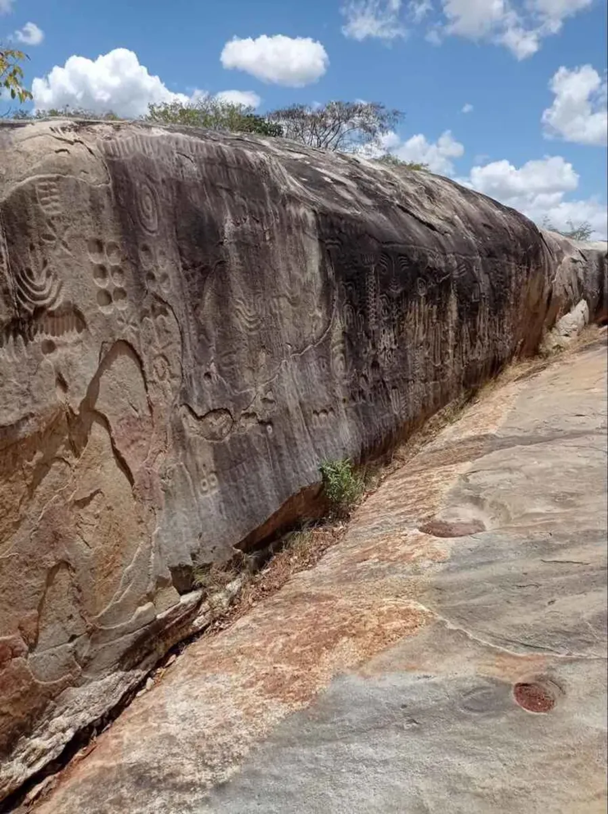
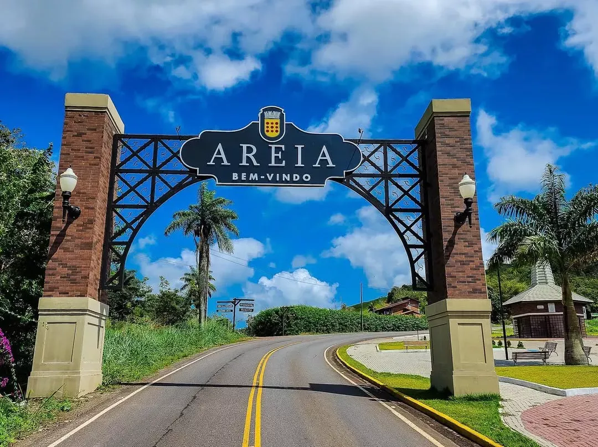
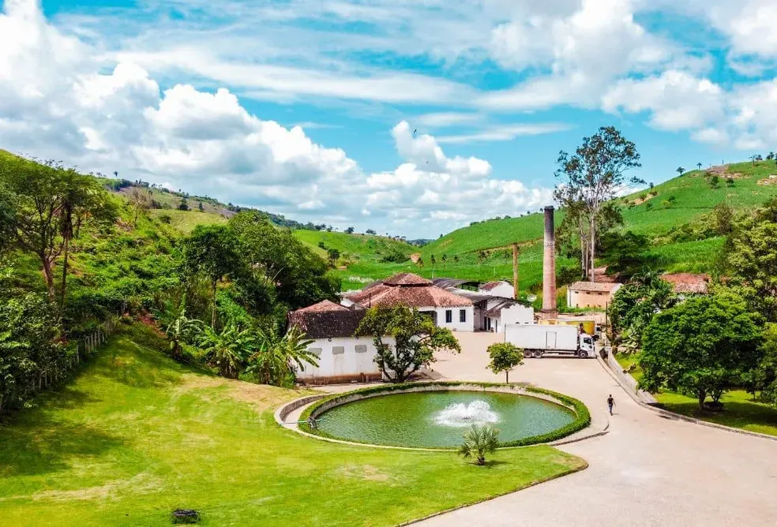
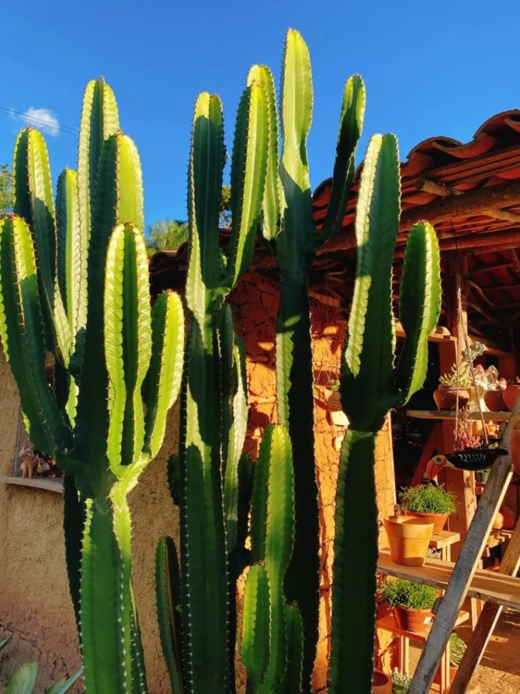
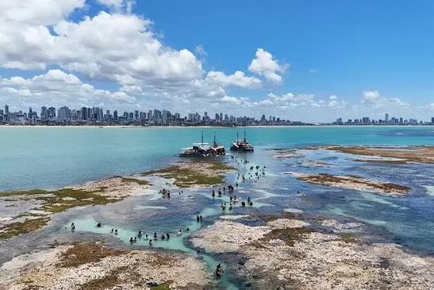
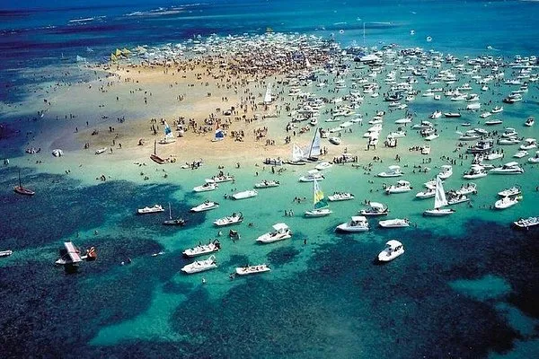
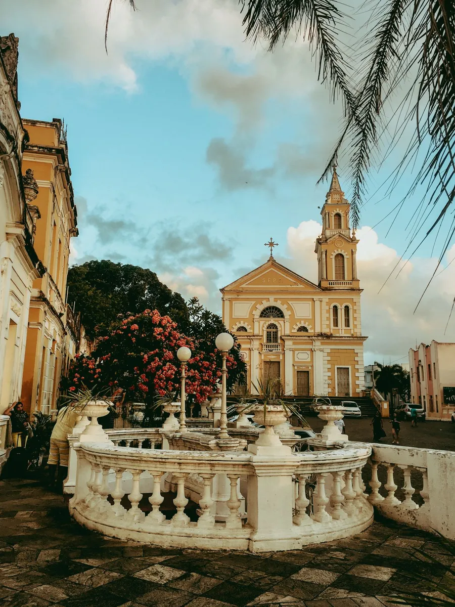
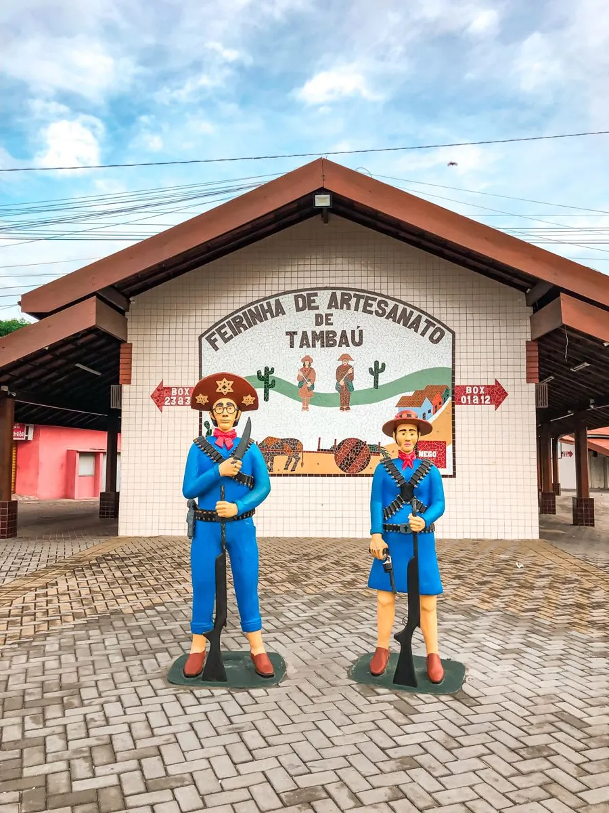

Transparência
Créditos e fontes
Site acadêmico, sem fins comerciais. Tudo o que não é nosso está creditado aqui. Se você é autor de alguma foto e quer crédito ou remoção, fale com a gente.
Fotos
-

Falésias do litoral sul (topo da página inicial)TODO: autor. Foto obtida no Google Imagens. -

Portal dos dinossauros em Sousa, ao pôr do solTODO: autor. Foto obtida no Google Imagens. -
Portal dos dinossauros em SousaTODO: autor. Foto obtida no Google Imagens.
-
 Lajedo de Pai Mateus, CabaceirasPossível origem: Krys Carneiro / Jornal da Paraíba (matéria "Pontos turísticos da Paraíba"). TODO: confirmar.
Lajedo de Pai Mateus, CabaceirasPossível origem: Krys Carneiro / Jornal da Paraíba (matéria "Pontos turísticos da Paraíba"). TODO: confirmar. -

Pedra do IngáTODO: autor. Foto obtida no Google Imagens. -
 Casario de AreiaTODO: autor. Foto obtida no Google Imagens.
Casario de AreiaTODO: autor. Foto obtida no Google Imagens. -

Portal de entrada de AreiaTODO: autor. Foto obtida no Google Imagens. -

Engenho no Brejo paraibanoTODO: autor. Foto obtida no Google Imagens. -

MandacaruTODO: autor. Foto obtida no Google Imagens. -

Piscinas naturais de PicãozinhoTODO: autor. Foto obtida no Google Imagens. -

Areia Vermelha, CabedeloTODO: autor. Foto obtida no Google Imagens. -
 Farol do Cabo BrancoPossível origem: Shutterstock, via Jornal da Paraíba. TODO: confirmar.
Farol do Cabo BrancoPossível origem: Shutterstock, via Jornal da Paraíba. TODO: confirmar. -
Orla de João PessoaTODO: autor. Foto obtida no Google Imagens.
-
 Centro Histórico de João PessoaTODO: autor. Foto obtida no Google Imagens.
Centro Histórico de João PessoaTODO: autor. Foto obtida no Google Imagens. -

Igreja e praça no Centro Histórico de João PessoaTODO: autor. Foto obtida no Google Imagens. -

Feirinha de Artesanato de TambaúTODO: autor. Foto obtida no Google Imagens. -
 Folhetos de cordel com xilogravuras de J. BorgesTODO: autor da foto. Foto obtida no Google Imagens.
Folhetos de cordel com xilogravuras de J. BorgesTODO: autor da foto. Foto obtida no Google Imagens.
Fontes das informações
- Jornal da Paraíba, Pontos turísticos da Paraíba
- Paraíba Business: Areia e as cachaças registradas, drinks com cachaça paraibana, Caribe paraibano, Seu Pereira e Coletivo 401, Sabadinho Bom, cordel como patrimônio da Paraíba
- Agência Sebrae, Indicação Geográfica da cachaça de Areia
- Revista Cultivar, algodão naturalmente colorido da Embrapa
- Revista Pesquisa FAPESP, Uma trama de cordéis
- Enciclopédia Itaú Cultural (Pedro Américo, João Câmara) e Prêmio PIPA (José Rufino)
- TODO: fontes da história das cidades, do Teatro Minerva e das frutas
Tecnologias e recursos
- Bootstrap 5.3 e Bootstrap Icons (licença MIT)
- Fontes Plus Jakarta Sans e DM Serif Display (Google Fonts, licença OFL)
- Contorno do mapa da Paraíba e dos estados vizinhos: dados de limites estaduais do projeto click_that_hood (Code for America)
- Player de música: incorporação oficial do Spotify
- Mapa de localização: incorporação do Google Maps
- Logo, ilustração do mapa e textos: equipe RotaPB. Parte do código gerada com auxílio de IA (Claude), conforme registrado no relatório